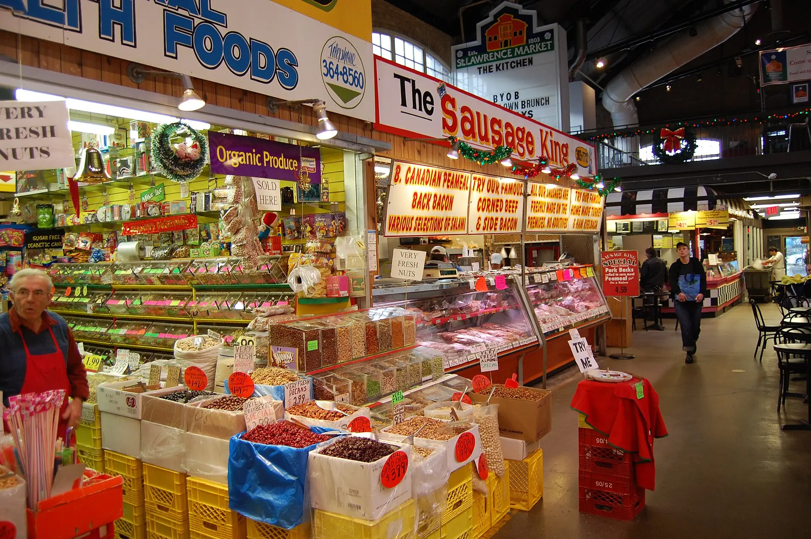
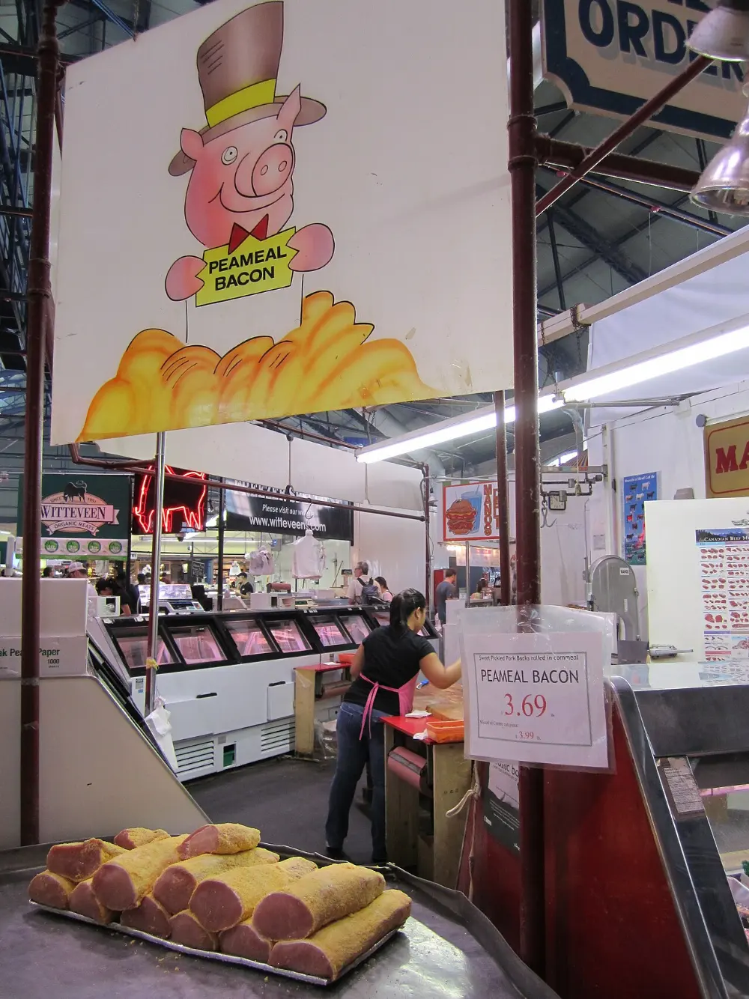
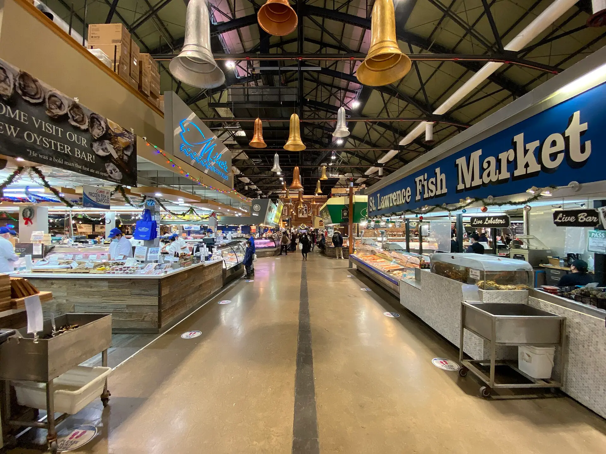
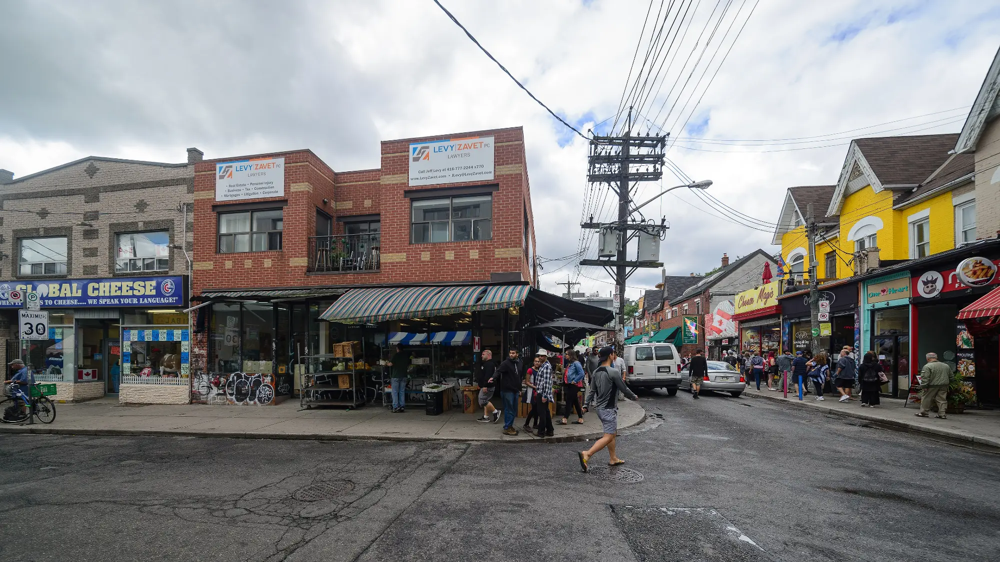
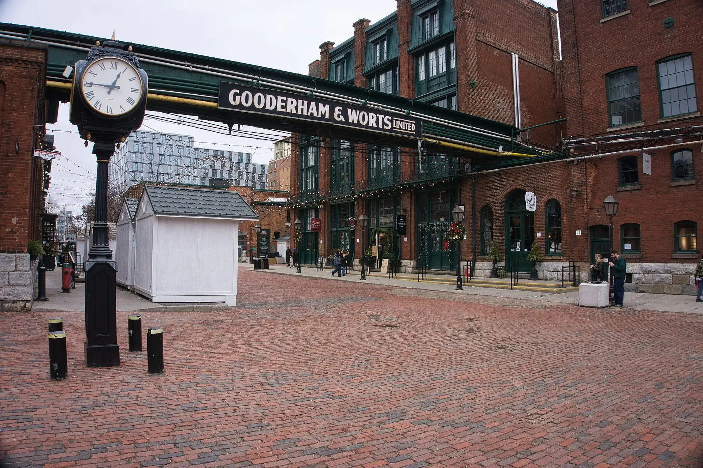
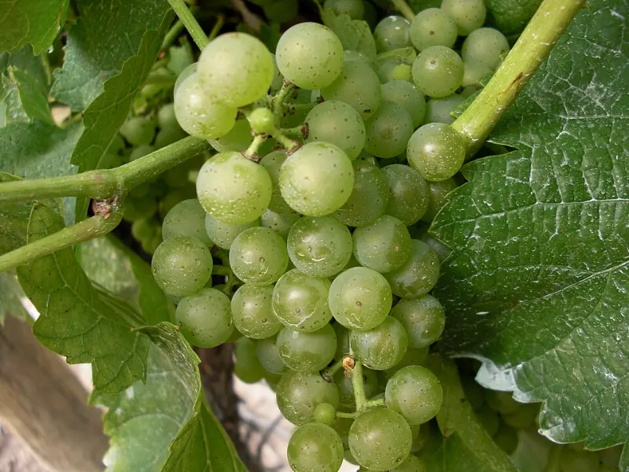
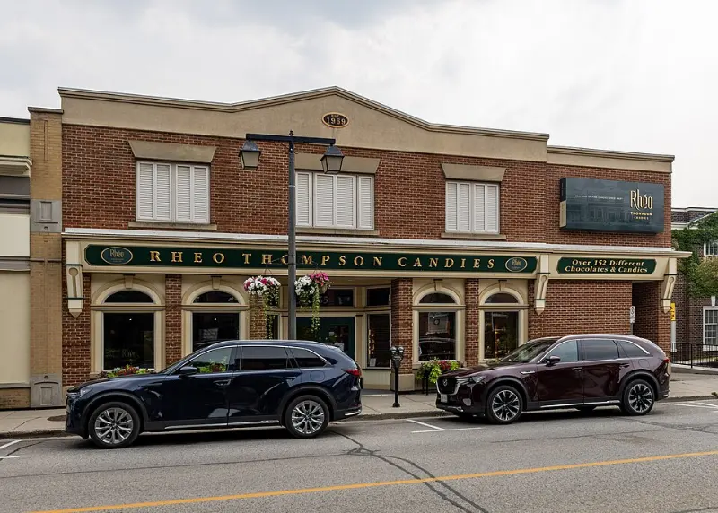

St. Lawrence Market
Toronto, Ontario
Why go
- Region
- Category

World 03 of 04 · Ontario
Food & Local Experiences Markets. Wine. Chocolate. Orchards.
Photo — St. Lawrence Market, Toronto

Food & Local Experiences

Photo — St. Lawrence Market · South Market
Collection 01
Toronto, Ontario
Why go

Toronto, Ontario
Why go


Toronto, Ontario
Why go

Photo — Niagara-on-the-Lake
Collection 02

Niagara-on-the-Lake, Ontario
Why go


The Blue Mountains, Ontario
Why go
Next world · 04
Entertainment & Adventure